Who: Elena Ruiz, 40 (born June 1986), a parent. Her child's tutor, Ines Ferreira, runs a self-serve space, "Ferreira Family Practice", and told her: "install Aimtrue and join my space with the code FMXY2345". Elena belongs to cohort C7, the Assessment cohort, on the giver's side ("give one, see results") in docs/member-home-plan.md. Ines's space offers Assessment only (Quest is off there). Elena wants to get into Ines's space and give her child the assessment Ines mentioned. This is the app replay of the web journey J07 (J07-space-code-let-in.md).
Day 1, signing up (steps 1-10). The guest home has no place for a code. Its only code, the example "QF7K2M", does
nothing when tapped (step 3). "Sign up free" led through the About-you form to a full-screen "Waiting for approval".
Day 2, asking to join (steps 11-23). The platform admin approved Elena in the web console. The app reopened on
the same guest home, and Sign in took her into "Elena's space", a personal space she never asked for. Its quick action "Have a code?" crashed the app: a red "Render Error" in this development build, then a blank white screen with nothing to tap (steps 14-15). It did the same on a second try (step 17). After closing and reopening the app she found a second "Have a code?" box at the bottom of the home (step 18). FMXY2345 there gave the toast "Asked to join. Its admins will let you in." (step 20). The request shows only on the Spaces page, behind her initials (step 23).
After Ines let her in (steps 24-27). Nothing told Elena. The app reopened on her own space, unchanged. A new row,
"Ferreira Family Practice · Parent", had appeared in the account sheet (step 25). Inside, the home leads with "Start an assessment" (step 26).
The dead end (steps 28-34). The Student picker says "No students to choose from." (step 28), and Start stays
grey. Nowhere in the app can she add her child, or learn who can:
Users lists only Elena, with no Add user (step 31);
her own record names Ines only in its activity (step 32);
Search finds nothing for "child" (step 33).
After a relaunch the home still offers the assessment she cannot start (step 34). No assessment started.
Steps not verified: step 3 (the example code), steps 14, 15 and 17 (the crash), and steps 28-34 (the dead end).
Conversion figures (from the entry point, the app's first screen). The address (twice) and the name are typed into the developer sign-in, which stands in for the provider step; see the Appendix.
Stretch
Screens
Taps
Typed fields
Waits
Dead ends
Day 1: guest home to "Waiting for approval" (steps 1-10)
4 (guest home, sign-up sheet, About you, waiting)
12 (+2 scrolls)
3 (address and name for the developer sign-up, the year search), 2 pickers, 1 checkbox
then the platform's approval (unannounced)
1 (the example code)
Day 2: relaunch to the request shown as waiting (steps 11-23)
The web journey reached the Assessment form in 22 taps and 1 typed field. The app took 26 taps and 2 relaunches:
The crash. The first-choice route to the code broke the app twice. Recovering cost 4 taps, 2 relaunches and a
long scroll to a second box.
The developer sign-in. It adds the typed address and name. Production's provider buttons were not seen.
Spaces. Finding the request (2 taps) and being let in (1 tap) are each one tap shorter than on the web. The app
puts the list of spaces in the account sheet, where the web uses a menu and then a switcher.
Every screen answered at once: there was no loading wait anywhere. As on the web, the cost is elsewhere:
Conversion. Two waits for a person, neither announced when it ends. A code that has no place until after
approval, and whose obvious button crashes. A space whose one feature the parent it was meant for cannot use.
Stickiness. Elena leaves with no reason inside the app to come back. Her next step is a text to Ines, outside
the app.
The 3 screens Elena would notice most:
Step 14, "Have a code?". Elena has signed up, waited a day and signed in, and finally sees a button for her
code, in the middle of her first home. Tapping it breaks the app: in this build a red "Render Error: useToast must be used inside <ToastProvider>.", then, once dismissed, a white screen with nothing on it (step 15). She has to close the app and open it again. It happened a second time (step 17). A parent following a tutor's instructions could easily stop here and decide the app is broken. step 14
Step 25, the account sheet. "Ferreira Family Practice · Parent" has quietly appeared under her own space. It is
the only sign that Ines let her in. She found it because she went looking in the same place as the day before. The home she opened on was exactly as before (step 24).
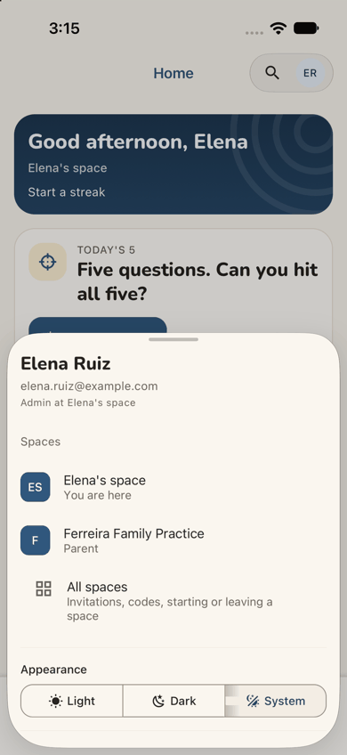
step 25
Step 28, "No students to choose from." Elena is inside her tutor's space, whose home leads with "Start an
assessment". The app says, plainly, that there is no student. It does not say why, that Ines must add her child, or how to ask her. Every other place she then tries (Users, her own record, Search) is a dead end. step 28
Contact sheet (all 34 phone steps):
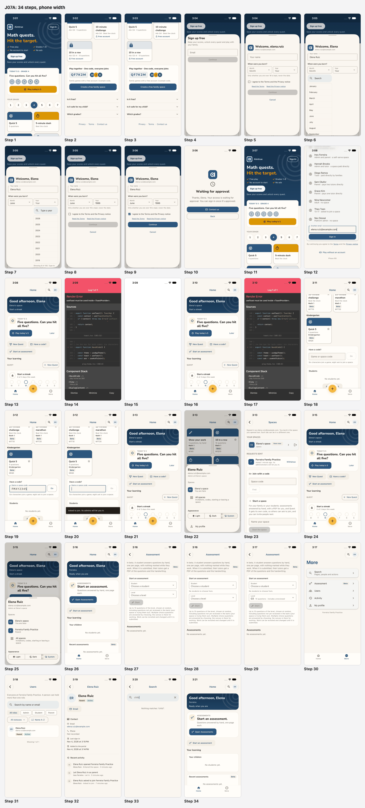
J07A contact sheet
Web and app. Compared with the web journey J07 (J07-space-code-let-in.md, Lena Fischer), the app differs in nine ways:
The guest home. The content is the same, including the static example code and the "Create a free family space"
button. Here the example code sits in a tinted chip, a little less like a field than the web's white box. Tapping it does nothing either way.
Getting in. "Sign up free" opens a sheet. In this build that sheet is the developer variant (an Email field),
with About-you inside it and a search box on the year list. The words are the web's. "Sign in" opens a sign-in screen, not the web's "Sign up free" sheet, so the web's sev2 on that title does not apply as seen here. The waiting screen fills the phone, without the web's leftover "Almost there" heading, and adds a "Back" button. The wording is the same, and so is the silence.
The code (app only). On the web, "Have a code?" scrolls the home down to the code box. In the app it opens the
box in a dialog, and the dialog crashes the app (steps 14-17). The box at the bottom of the home works, with the same hint ("Six characters join a game; eight ask to join a space.") and the same toast.
The waiting request. The Spaces page shows "Ferreira Family Practice" in full (the web's phone layout cut it to
"Ferreira Family Pra…"). It is reached through the account sheet in 2 taps; the web takes 3. The page still says "Each tab can be in a different one." in an app that has no tabs.
Being let in. It is silent on both. The app's only sign is a row in the account sheet, one tap away. The web's
is a row in the space switcher, two taps away.
The space's home. The app's home has a "Your children — No students yet." card, an honest hint the web's home
did not give. The tab bar there has no yellow (+).
The student picker. It says "No students to choose from." The web opened an empty list below the bottom of the
screen, with no message. Neither says why, or who can add a child.
Users. The app shows a parent no "Add user". So the web's sev3, a whole form and then a 403, does not happen
here. Users lists only Elena on both, not Ines.
Her own record. Its "Recent activity" says "Let Elena Ruiz in as parent — Ines Ferreira · Let in". That is the
only place in the app that names who let her in. The web's record was not opened.
The end is the same dead end on both platforms. The app's version is clearer and sets no trap, but it is no closer to an assessment.
[sev1] Staff and web words where a parent reads: the space's full name, "Your child's assessments", plain words for "unreviewed", no "tabs" or "portal" (steps 23, 26, 27, 29, 32).
Findings
sev4
Let in as a parent with no child, Elena cannot start an assessment, and nothing says who can fix it
Issue
Ines let Elena in as a Parent. Her let-in form never asks which child is the parent's (J11, finding 4), so no child is linked to Elena in the space. Inside, everything points Elena at Assessment:
the band says "Ready when you are";
Next up says "ASSESSMENTS — Start an assessment. Questions answered by hand, one page each. [Open Assessments]";
a quick action repeats it (step 26).
The home's "Your children" card says "No students yet." (step 26). Tapping "Choose a student" on the Assessment page shows "No students to choose from." (step 28). A level can be chosen, but Start stays grey, with no message (step 29). Then she looks for a way to add her child, or someone to ask:
More has Assessment, Users, Activity and My profile, and nothing about children (step 30);
Users lists only Elena and offers no action (step 31);
her own record has contact details and activity, and no children section (step 32);
After a relaunch she lands in the same space, and Next up still offers "Start an assessment" (step 34).
Violation
cuj-contract, step 28 (expected: her child to choose, or a note that her child is not here yet and who can add them; observed: "No students to choose from." and nothing else). Also steps 29-34. task-completion: the journey's end, an assessment started, cannot be reached from Elena's side. success-criteria: after the relaunch the end state is unchanged and wrong. Nielsen #1 Visibility of system status; Nielsen #9 Help users recognize, diagnose and recover from errors.
Severity
Classify: blocked. The app tells Elena what is missing, more clearly than the web does, but not why,
not who can fix it, and not how to ask. The only way out is outside the app: she texts Ines, and Ines has to work out, unprompted, that she must add Elena's child. C7's giver wants "give one, see results", with Start an assessment in 2 taps or fewer. Here it is impossible, on the home of a space whose only feature is Assessment.
Evidence
step 26step 28
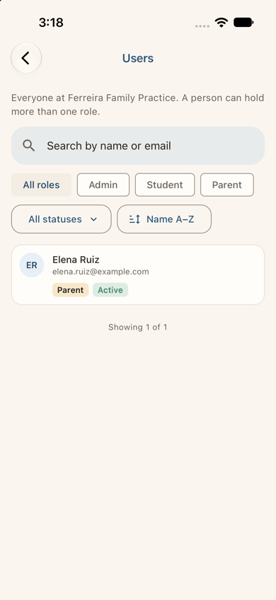
step 31
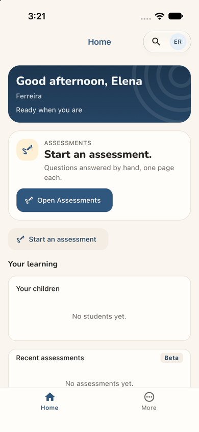
step 34 Repro:
In a self-serve space with Assessment on, an admin lets a join request in as Parent without linking a child.
In the app, as that parent, open the space and tap Open Assessments.
Tap Student: "No students to choose from."
Choose a level: Start stays disabled.
Users, the parent's own record and Search offer no way to add or ask for a child.
Fix
When the reader has no student they may start an assessment for, replace the form with one card: "To give an
assessment, your child needs to be in Ferreira Family Practice. Ines Ferreira adds children here." Give it a button "Ask Ines to add my child". It could file a request the admin sees in Next up, or open the share sheet with a ready message (a self-serve space sends no email).
Next up must not offer "Start an assessment" to someone who cannot start one. For a parent with no child, Next up
is "Your child isn't here yet", with the same button. Put the same line in the home's "Your children" card.
Say why Start is grey ("Choose a student first").
On the admin's side, the let-in form for a Parent should ask "Which child?", with "Add a child" inline (J11
finding 4). Letting parents add their own children here would change a rule (today only admins add people): that is the owner's decision, not part of this fix.
sev3
The "Have a code?" quick action crashes the app to a blank screen
Issue
On Elena's first home, the quick action "Have a code?" sits above the fold beside New Quest and Start an assessment (step 13). It is the first place the app offers for her code. Tapping it brings up, in this development build, a red "Render Error":
the message: "useToast must be used inside <ToastProvider>.";
the sources: toast.tsx (102:32) and play-home.tsx (368:8), export function HaveACode();
Dismiss leaves a blank white screen: no header, no tabs, nothing to tap (step 15). Closing and reopening the app brings her home back, still signed in (step 16). The second tap fails the same way (step 17). She recovered only by closing the app again and scrolling the home four long swipes down. There, below every tile, a second "Have a code?" box works (steps 18-20).
Violation
cuj-contract, step 14 (expected: a box for her code; observed: the app crashed) and step 15 (expected: a way back; observed: a blank screen). Nielsen #9 Help users recognize, diagnose and recover from errors (no error screen, no way back); Nielsen #5 Error prevention.
Severity
Classify: a workaround is needed, and the app crashed twice on the main path. The error is thrown by
the app's own code (useToast refuses outside its provider), not by a development-only check. So a release build cannot show that dialog either; what it shows instead was not observed. A newcomer who meets a white screen after her first tap inside the app may well not come back. It is not a 4 only because a second box, several screens down the same home, works (step 18). The same quick action is on the first home of every new personal space in the other app journeys (J01A, J04A, J06A), where it was not tapped. The web's "Have a code?" works (J07, step 14), so this is also a parity gap.
Evidence
step 14step 15
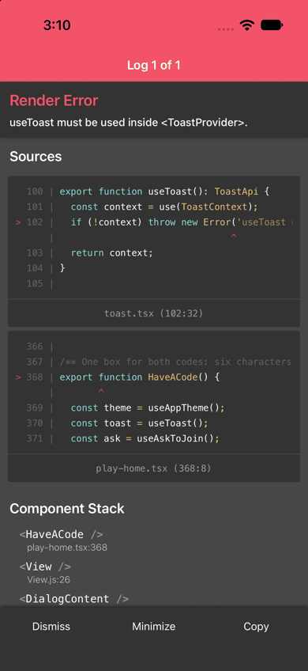
step 17
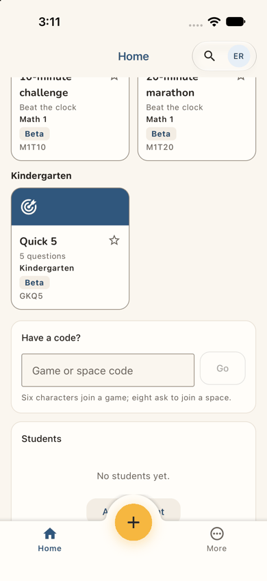
step 18 Repro: in the iOS development build, as any member whose home shows the quick action "Have a code?", tap it. The red "Render Error: useToast must be used inside <ToastProvider>." appears every time. Dismiss leaves a white screen until the app is closed and reopened.
Fix
Render the quick action's dialog inside the toast provider, or mount the provider above the portal the dialogs
use. Give the flow that taps this quick action and asks to join a space the smoke tag, so it is covered on both platforms.
Give the app a root error screen ("Something went wrong — Back to Home") so that no error leaves a white screen.
Until it is fixed, make the quick action scroll to the home's own box, as the web does.
sev3
Being let in is silent: the only sign is a new row in the account sheet
Issue
Asking to join takes two taps once the working box is found (steps 19-20). Its toast, "Asked to join. Its admins will let you in.", does not name the space, and it fades. The top of the home then looks exactly as before (step 21). The request is visible only on the Spaces page, under "Requests sent" (step 23), behind her initials and "All spaces". Nothing on the home points there.
When Ines lets her in, nothing tells Elena either. She reopens the app and lands in her own space, her last opened (step 24). The home, the band and Next up are all as before. There is no banner, no Next up item, and no dot on her initials. Only the account sheet shows "Ferreira Family Practice · Parent" (step 25). No email reached her: self-serve spaces send none, and this local stack sends none.
Violation
cuj-contract, step 20 (expected: a confirmation that names Ines's space; observed: "Its admins"), step 21 (expected: a waiting state on the home; observed: none) and step 24 (expected: a sign she was let in; observed: none). Nielsen #1 Visibility of system status; Nielsen #6 Recognition rather than recall (she must remember where the request lives).
Severity
Classify: a workaround is needed. Elena must remember, unprompted, to open her initials to learn
whether Ines has decided. A parent who does not would believe she is still waiting, or that it failed, and stop coming back. It is not a 4: the account sheet does list the space, and opening it works (step 26).
Evidence
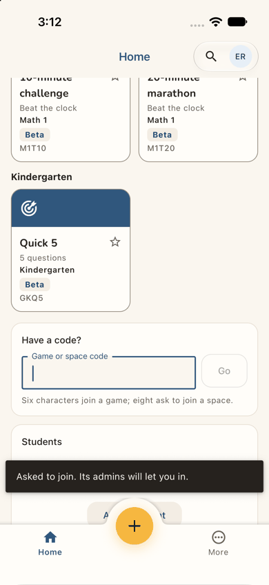
step 20step 21
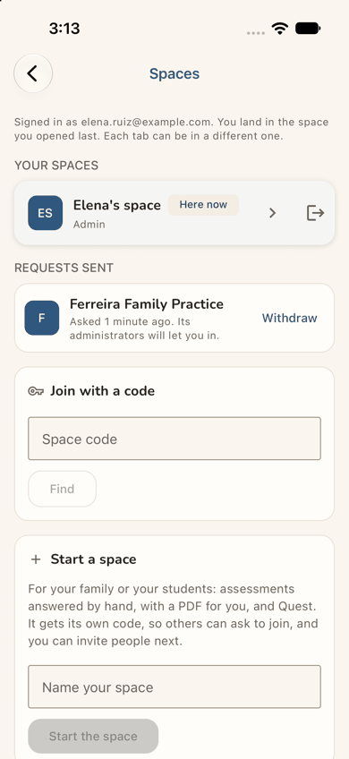
step 23
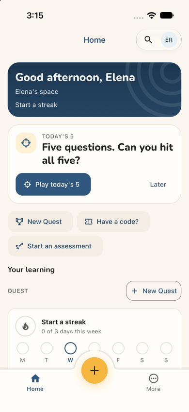
step 24step 25 Repro:
As an approved member in a personal space, enter a space code in the home's "Have a code?" box and tap Go.
Scroll up: the home shows no request.
Have the space's admin let you in, then close and reopen the app: the home is unchanged.
The space appears only in the account sheet's Spaces list.
Fix
Name the space in the toast ("Asked to join Ferreira Family Practice. Ines will let you in.").
Keep a waiting card on the home while a request is pending, as an invitation already gets a banner. Make it Next
up: "Waiting for Ferreira Family Practice to let you in — asked today", with Withdraw.
When the request is accepted, open the new space once on the next launch, with a one-line welcome ("You're in
Ferreira Family Practice. Ines Ferreira let you in today."). Until then, show a dot on the account button.
A push notification on acceptance belongs to docs/roadmap/push-notifications.md, which is not scheduled.
sev3
The approval wait says nothing of who, when, or the code she holds
Issue
After Continue, the app shows a full-screen "Waiting for approval": "Thanks, Elena. Your access is waiting for approval. You can sign in once it's approved." The buttons are "Contact us" (filled) and "Back" (step 10). The screen leaves four things out:
who approves: Aimtrue, or Ines, whose code Elena has not been able to enter anywhere;
how long approval takes;
whether she will be told;
that her code will be asked for after approval.
The next day the app opens on the same guest home, with no "You're approved" (step 11). She tries Sign in on a hunch. The same wait is reported in J01A and J06A, and on the web in J07; here it also strands the code.
Violation
cuj-contract, step 10 (expected: what happens next, including the code; observed: only that access waits) and step 11 (expected: some sign the account is ready; observed: none). Nielsen #1 Visibility of system status; Nielsen #2 Match between system and the real world (two approvals, the platform's and the space's, look like one to her).
Severity
Classify: a workaround is needed. Elena must come back on her own, on no schedule, and guess that
she can now sign in. A parent sent by a tutor reasonably believes the tutor approves her. She may wait for Ines, while Ines waits for a request that cannot arrive until Elena returns. It is not a 4: signing in later works (step 13).
Evidence
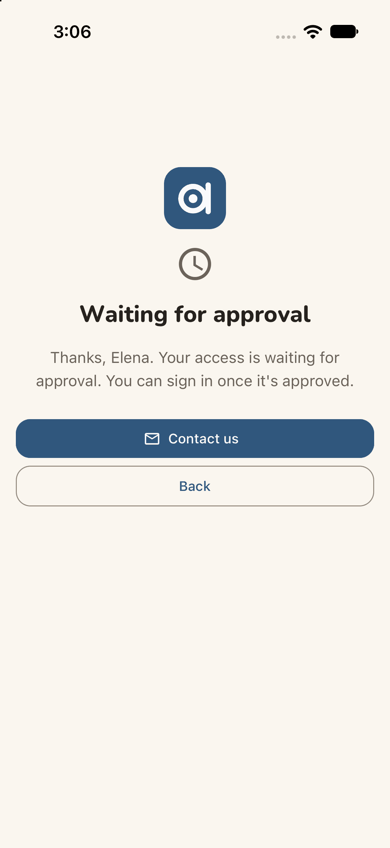
step 10step 11 Repro: under Post-approved sign-up access, sign up from the guest home's "Sign up free". Answer the age question, tick the terms and tap Continue: "Waiting for approval". After the console approves, close and reopen the app: the guest home is unchanged.
Fix
Give the wait the facts: "Aimtrue checks new accounts by hand, usually within a day. We'll let you know when
you're in. Have a code from a tutor or school? You'll enter it right after."
Point "Contact us" at a product address.
On the next launch, recognise the device that is waiting ("Your account is ready: Sign in") instead of showing the
guest home.
sev2
The code has no place until after approval, and the working box is at the bottom of the home
Issue
Ines's instruction comes with a code, and the guest home (step 1) has nowhere to type it. Its only code is an example, "QF7K2M", in a tinted chip under "Play together · One code, everyone joins", with "Family games with a free account. Example code." and "Create a free family space" (step 2). Tapping the chip does nothing: it is static, and it is a game code, not a space code (step 3, a dead end). The sign-up sheet and the About-you form do not ask for a code either (steps 4-5).
After approval, the quick action "Have a code?" crashes (previous finding). The box that works is at the very bottom of the home, four long swipes down, past the streak, the Daily, the grade row and some fifteen tiles (step 18). Its hint, "Six characters join a game; eight ask to join a space.", is what told her that her 8-character code was right. The Spaces page has a third box, "Join with a code" (step 23), which she saw only after asking.
Violation
cuj-contract, steps 2-3 (expected: a place for her code; observed: an example code that does nothing) and steps 4-5 (expected: the code asked for at sign-up; observed: not mentioned). Nielsen #7 Flexibility and efficiency of use; Nielsen #4 Consistency and standards (three code boxes, one broken, none where she starts).
Severity
Classify: real friction and one dead end. A code holder is the warmest kind of newcomer, and the
app makes her carry the code through sign-up, a wait for approval and a second sign-in before it is asked for. Then the obvious box is broken, and the working one is the last thing on the page.
Evidence
step 2
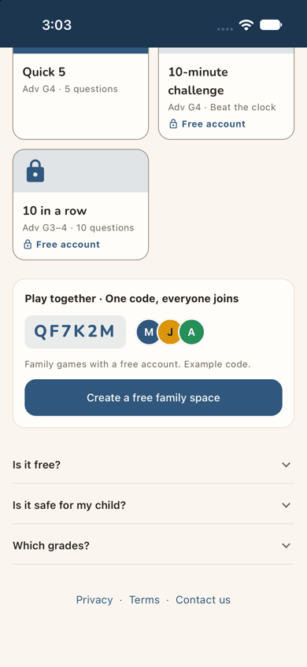
step 3
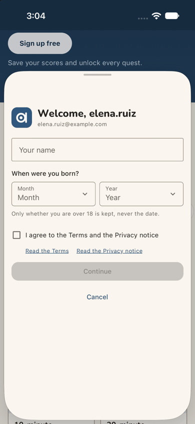
step 5step 18 Repro: signed out, scroll the guest home to "Play together" and tap QF7K2M: nothing happens. After signing in, scroll the home to its end: the working "Have a code?" box is below every tile.
Fix
Put a real "Have a code from a tutor or school?" field on the guest home, near the top.
Accept a space code there and keep it on the device through sign-up. File the join request as soon as the account
is approved, and say so on the waiting screen ("We'll ask Ferreira Family Practice to let you in").
Label the example chip as an illustration ("for example"), as the web report also asks.
Keep one code box, near the top of the home, for a member who has not played yet.
sev2
She lands in a space of her own she never asked for, as its admin and its learner
Issue
Her first screen after sign-in (step 13) is the home of "Elena's space", a personal space made for her at sign-up. Nothing explains it. The home addresses her as the learner:
Next up "Today's 5: Five questions. Can you hit all five?";
"Start a streak, 0 of 3 days this week";
"Your learning > Quest", with New Quest.
The account sheet calls her "Admin at Elena's space" (step 22). For a 40-year-old parent who came to join her tutor's space, it reads as a child's practice page with her name on it, in a space she did not ask for. While her request waits, the home leads with play, not with the request (step 21).
Violation
cuj-contract, step 13 (expected: a screen about joining Ines's space; observed: her own space, framed as a player's). Nielsen #2 Match between system and the real world.
Severity
Classify: an observable mismatch and real friction. It does not block: a code box exists. But it
blurs what Elena signed up for, and it makes "which space am I in?" a live question for the rest of the journey. At step 24 she lands back here after being let in.
Evidence
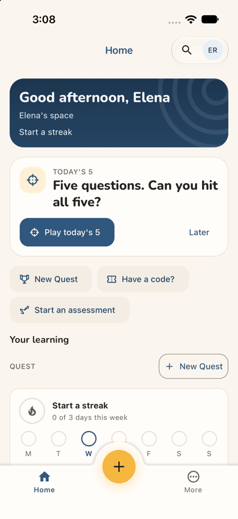
step 13
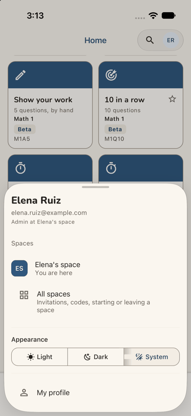
step 22 Repro: as a newly approved adult, sign in and look at the first home and the account sheet.
Fix
On first arrival, one line on the band: "This is your own space for practice. Ines's space will appear here once
she lets you in."
While a join request is pending, make it Next up (see the let-in finding above).
For an adult whose sign-up did not come from guest play, lead with the code box rather than Today's 5.
sev2
"Everyone" at Ferreira Family Practice is only Elena: the admin is named nowhere a parent looks
Issue
Looking for her child, Elena opens More > Users (steps 30-31). It says "Everyone at Ferreira Family Practice. A person can hold more than one role." and lists one person, herself (Parent, Active, "Showing 1 of 1"). Ines, who runs the space, is not listed, and nothing else in the space names her: not the home, not More, not the Assessment page. The only place in the app that says who let Elena in is the bottom of her own record: "Let Elena Ruiz in as parent — Ines Ferreira · Let in · 5 minutes ago" (step 32). So Elena cannot see, inside the app, whom to ask about her child.
Violation
cuj-contract, step 31 (expected: the space's people, or at least its admin; observed: only herself, under "Everyone"). Nielsen #2 Match between system and the real world ("Everyone" is one person); Nielsen #10 Help and documentation (no one to ask).
Severity
Classify: an observable mismatch that deepens the dead end. Keeping the space's other families
private is right. Hiding the one person a newcomer needs to reach is not.
Evidence
step 31
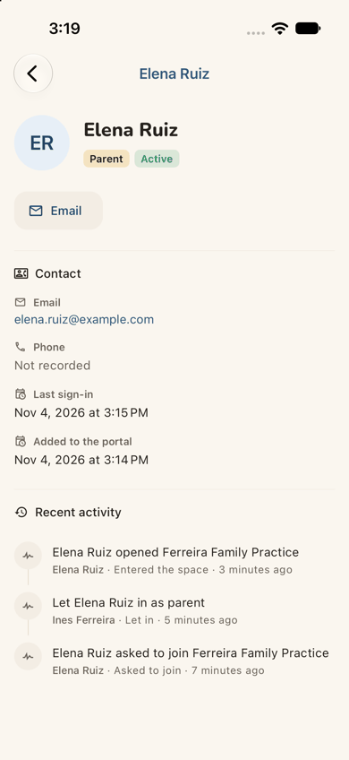
step 32 Repro: as a Parent of a self-serve space (not an admin), open More > Users, then tap your own card.
Fix
For a non-admin, title Users "Your family at Ferreira Family Practice" and add one line, "Run by Ines Ferreira",
with the same "Ask Ines" action as the sev4 fix.
Put the same line on the space's home band for a newcomer's first visits.
sev1
Staff and web words where a parent reads
Issue
Small wording problems along the way:
Inside the space, the band says only "Ferreira" (the short name), not "Ferreira Family Practice", the name Ines
gave her (step 26).
"Your children" sits under "Your learning", though the learning is her child's (step 26).
The Assessment page says "their tutors get a PDF", and the form's note says "including questions not yet reviewed
in the bank (your space is trying them out)". The chosen level reads "G3 · 10 questions · includes unreviewed" (steps 27, 29). That is staff language, and slightly worrying to a parent.
The Spaces page says "Each tab can be in a different one." in an app that has no tabs (step 23).
Her record says "Added to the portal" (step 32).
Violation
cuj-contract, steps 23, 26, 27, 29 and 32 (observable wording mismatches). Nielsen #2 Match between system and the real world.
Severity
Classify: cosmetic. Each one makes Elena pause briefly, and none of them stops her.
Evidence
step 23
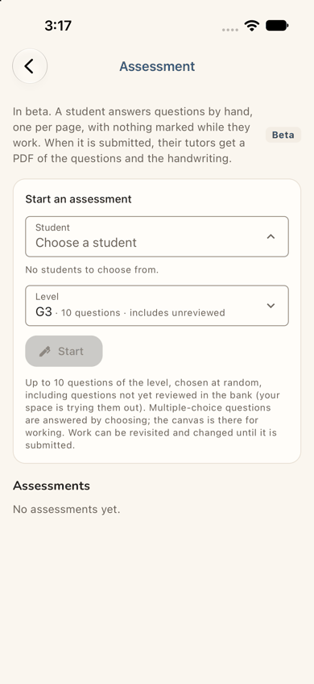
step 29 Repro: as a member of Ferreira Family Practice in the app, open the home, the Assessment page (choose a level), the Spaces page and your own record.
Fix
Show the space's full name in the band.
Title a parent's section "Your child's assessments".
Word the beta note for families ("Some questions are new and still being checked").
In the app, drop the sentence about tabs; say "space", not "portal".
Walkthrough
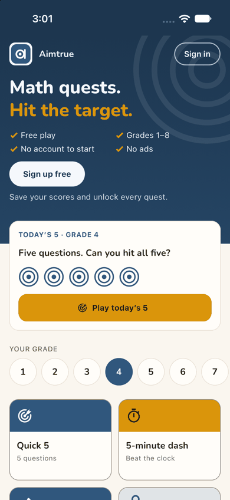
Step 1 — Launch the app fresh (landing) Expected: a front page with a place for a tutor's code, or a way to sign up and join a space. Observed: the guest home "Math quests. Hit the target.", with Free play, Grades 1–8, No account to start and No ads. "Sign up free" is a white pill, with "Save your scores and unlock every quest." under it. "Sign in" is an outlined pill at the top right. Below are "Today's 5 · Grade 4", a grade row with 4 selected, and tiles. There is no code field and no mention of a tutor's space above the fold. Dark mode is readable.Step 2 — Scroll down looking for a code box Expected: a "Have a code?" or "Join a space" field. Observed: more tiles (Adv G4, two locked "Free account"), then "Play together · One code, everyone joins". It has the code QF7K2M in a tinted chip, three avatars, "Family games with a free account. Example code." and "Create a free family space". Then the questions "Is it free?", "Is it safe for my child?" and "Which grades?", and Privacy · Terms · Contact us.Step 3 — Tap the code QF7K2M to type her own Expected: a field that takes her code. Observed: nothing. The chip is static (its accessible name is "Example game code Q F 7 K 2 M"), with no keyboard, focus or sheet. Dead end.
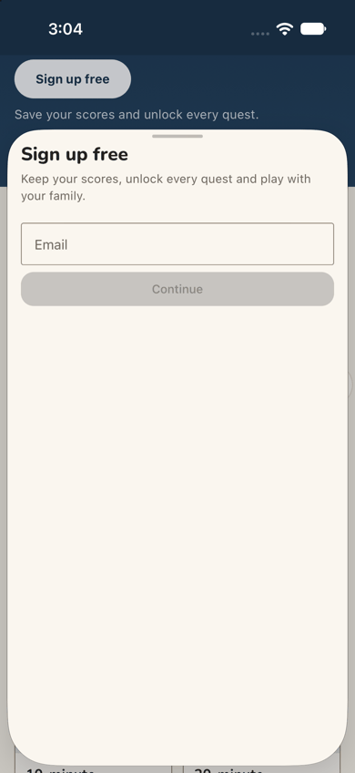
Step 4 — Scroll back up and tap "Sign up free" Expected: a sign-up step, maybe with a place for her code. Observed: a sheet, "Sign up free — Keep your scores, unlock every quest and play with your family.", with an Email field and a disabled Continue (the developer variant; production has the provider buttons here). There is no code field.Step 5 — Type her address and tap Continue Expected: an account form. Observed: the sheet turns into About you. It shows the logo, "Welcome, elena.ruiz" and her address, then "Your name" (developer sign-up only), "When were you born?" (Month, Year), "Only whether you are over 18 is kept, never the date.", a terms checkbox with links, a disabled Continue and Cancel. Still no code field.
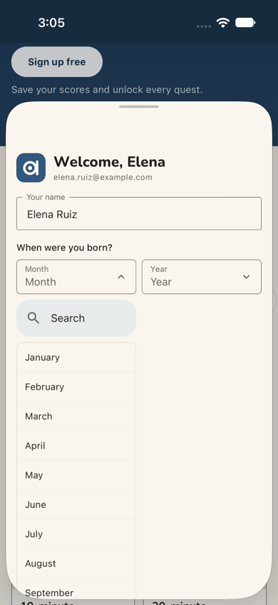
Step 6 — Type her name and open Month Expected: the name taken, a month list. Observed: "Welcome, Elena". The month list opens under Month with a Search box. January to August are visible, so June is in reach.
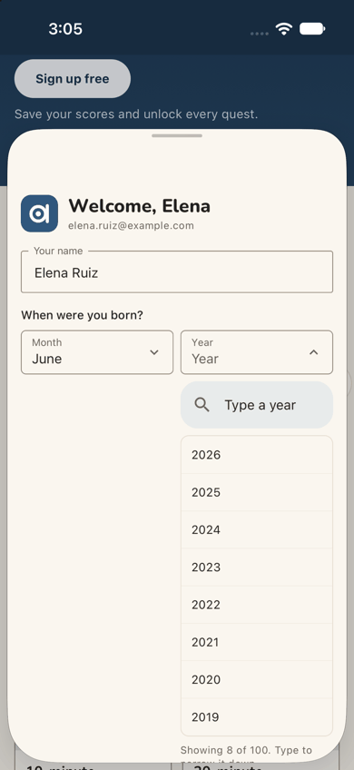
Step 7 — Pick June and open Year Expected: a year list. Observed: Month reads "June". The year list runs from 2026 down (2026 … 2019), with "Type a year" at the top and "Showing 8 of 100. Type to narrow it down." cut by the sheet's lower edge.
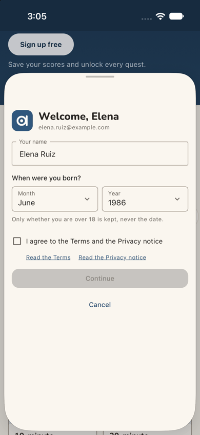
Step 8 — Type 1986 in the year search and pick it Expected: the year set. Observed: June and 1986. The list closes, and Continue stays grey until the terms are ticked.
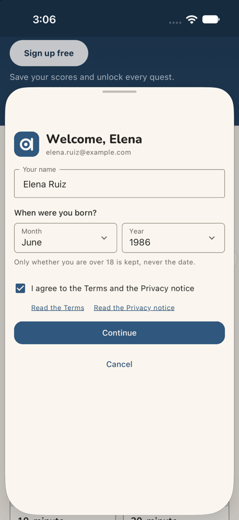
Step 9 — Tick "I agree to the Terms and the Privacy notice" Expected: Continue enabled. Observed: the box ticks and Continue turns blue.Step 10 — Tap Continue: "Waiting for approval" (landing) Expected (Post-approved): a waiting screen that says what happens next. Observed: a full screen with the logo, a clock, "Waiting for approval" and "Thanks, Elena. Your access is waiting for approval. You can sign in once it's approved.", then "Contact us" (filled) and "Back". Dark mode is readable. That is the end of day 1.Step 11 — A day later, after the platform approved her: open the app again (landing) Expected: some sign that her account is approved. Observed: the very same guest home as step 1, with nothing about her account.
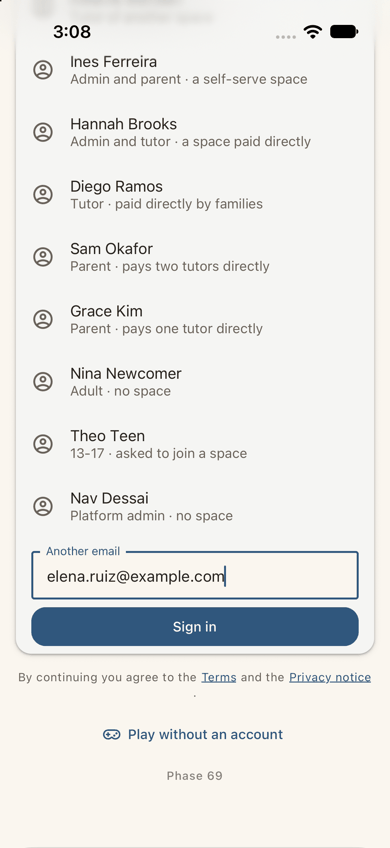
Step 12 — Tap "Sign in" and type her address Expected: a sign-in step. Observed: the developer sign-in (this build only): a list of seeded people, then "Another email" with her address typed, Sign in, the terms line, "Play without an account" and "Phase 69". In production this is a provider button; this screen was not judged.Step 13 — Tap Sign in (landing) Expected: "still waiting", or a screen that asks for her tutor's code. Observed: signed in at once, on the home of "Elena's space": - the band "Good afternoon, Elena / Elena's space / Start a streak"; - Next up "Today's 5: Five questions. Can you hit all five?", with Play today's 5 and Later; - quick actions New Quest, Have a code? and Start an assessment; - "Your learning > Quest" and "Start a streak, 0 of 3 days this week". The tab bar has Home, a yellow (+) and More. Dark mode is readable.Step 14 — Tap "Have a code?" Expected: a box for her code. Observed: the development build's red "Render Error: useToast must be used inside <ToastProvider>.". The sources are toast.tsx (102:32) and play-home.tsx (368:8), export function HaveACode(). The component stack is <HaveACode />, <View />, <DialogContent />. The buttons are Dismiss, Minimize and Copy. The quick action's dialog failed to render.Step 15 — Tap Dismiss Expected: back to the home, or an error with a way back. Observed: a blank white screen with only the status bar: no header, no tabs, nothing to tap. Dead end.Step 16 — Close the app and open it again Expected: the app back. Observed: the home of Elena's space, still signed in, exactly as at step 13. Nothing mentions what happened.Step 17 — Tap "Have a code?" once more Expected: maybe it works this time. Observed: the same red "Render Error: useToast must be used inside <ToastProvider>.". It is reproducible.Step 18 — Dismiss, reopen the app, and scroll down the home instead Expected: another place for the code. Observed: after Dismiss (a blank screen again, not captured) and a relaunch, four long swipes passed the streak, the Daily, the grade row and the tiles (down to Math 1 and Kindergarten, each with "Beta" and a code such as GKQ5). At the bottom is a card "Have a code?" with a "Game or space code" field, a grey Go and "Six characters join a game; eight ask to join a space." Below it is "Students — No students yet."
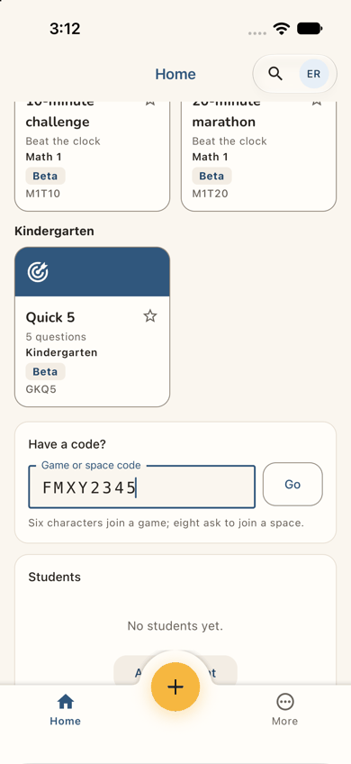
Step 19 — Type FMXY2345 Expected: the code accepted. Observed: the label floats, the code shows in spaced capitals, and Go is enabled.Step 20 — Tap Go Expected: a confirmation that names Ines's space. Observed: at once, a dark toast at the bottom, "Asked to join. Its admins will let you in." The field empties and Go greys. The page does not change. The words are the web's.Step 21 — Scroll back to the top of the home Expected: a "Waiting for Ferreira Family Practice" line. Observed: the home exactly as at step 13, with no trace of the request.Step 22 — Tap her initials (the account button) Expected: Ines's space, perhaps as "requested". Observed: a sheet with "Elena Ruiz", her address and "Admin at Elena's space". Under Spaces it lists "Elena's space · You are here", then "All spaces — Invitations, codes, starting or leaving a space". Below are Appearance and My profile. There is no Ferreira. (Behind the sheet the home had moved to the Math 1 tiles.)Step 23 — Tap "All spaces" (landing) Expected: her request. Observed: the Spaces page: - "Signed in as elena.ruiz@example.com. You land in the space you opened last. Each tab can be in a different one."; - YOUR SPACES: "Elena's space · Here now · Admin", with a leave icon; - REQUESTS SENT: "Ferreira Family Practice — Asked 1 minute ago. Its administrators will let you in.", with Withdraw; - "Join with a code" (Space code, Find) and "Start a space". Dark mode is readable.Step 24 — Later, after Ines let her in: open the app again (landing) Expected: a sign that Ines let her in (a banner, a Next up item), or landing in Ines's space. Observed: the home of Elena's space, her last opened, the same as step 13. There is no banner, no item and no dot on her initials.Step 25 — Tap her initials, where she found her request Expected: Ines's space, or the request still pending. Observed: Spaces lists "Elena's space · You are here", then a new row "F Ferreira Family Practice · Parent", then All spaces.Step 26 — Tap "Ferreira Family Practice" (landing) Expected: a welcome to Ines's space, what it offers, her child. Observed: at once, the space's home: - the band "Good afternoon, Elena / Ferreira / Ready when you are"; - Next up "ASSESSMENTS — Start an assessment. Questions answered by hand, one page each.", with Open Assessments; - one quick action, "Start an assessment"; - "Your learning", with "Your children — No students yet." and "Recent assessments (Beta) — No assessments yet.". The tab bar has only Home and More. Quest, which is off here, is absent. There is no welcome, and no mention of Ines. Dark mode is readable.
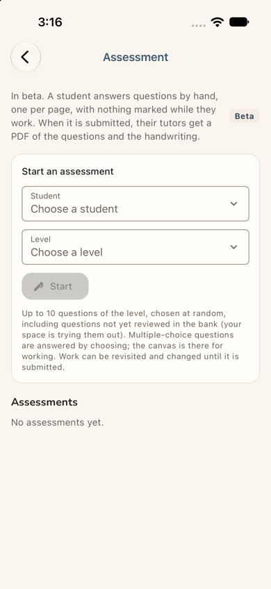
Step 27 — Tap "Open Assessments" (landing) Expected: the start of an assessment. Observed: the Assessment page: - "In beta. A student answers questions by hand, one per page, with nothing marked while they work. When it is submitted, their tutors get a PDF of the questions and the handwriting."; - "Start an assessment", with Student "Choose a student", Level "Choose a level" and a grey Start; - the note about up to 10 questions "including questions not yet reviewed in the bank"; - "Assessments — No assessments yet.". Dark mode is readable.Step 28 — Tap "Choose a student" Expected: her child's name, or a note that her child is not here yet and who can add them. Observed: the field opens (chevron up), and under it, in small grey type: "No students to choose from." There is no list, no hint and no button. Dead end.Step 29 — Choose a level anyway: G3 Expected: Start lights up, or a reason why not. Observed: Level reads "G3 · 10 questions · includes unreviewed", and Start stays grey. "No students to choose from." is still there. No message says why Start is grey.
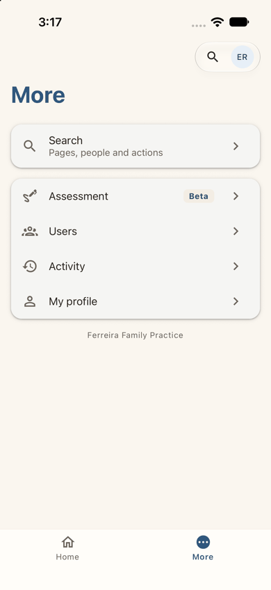
Step 30 — Go back and open More Expected: "My children" or "Add a child". Observed: "More", with Search (Pages, people and actions), then Assessment (Beta), Users, Activity and My profile. The footer says "Ferreira Family Practice".Step 31 — Tap Users Expected: her family, or the space's people. Observed: "Everyone at Ferreira Family Practice. A person can hold more than one role.", a search box, role and status filters, and one card: "Elena Ruiz · Parent · Active". "Showing 1 of 1." There is no Add user.Step 32 — Tap her own card Expected: her profile, perhaps with her children and "Add a child". Observed: her record, with Parent, Active and an Email button. Contact gives her email, Phone "Not recorded", her last sign-in and "Added to the portal". Recent activity lists "Elena Ruiz opened Ferreira Family Practice", "Let Elena Ruiz in as parent — Ines Ferreira · Let in · 5 minutes ago" and "Elena Ruiz asked to join Ferreira Family Practice". It is one page, with no children section. Dead end.
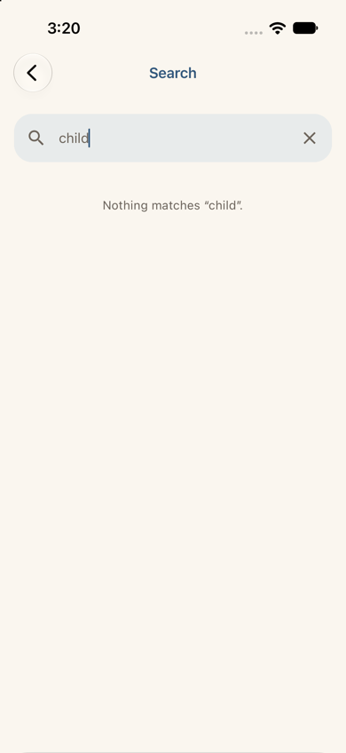
Step 33 — Go back to More, open Search and type "child" Expected: an action such as "Add a child", or "My children". Observed: "Nothing matches "child"." Dead end.Step 34 — Close the app and open it again (end-state check, landing) Expected: still in Ines's space, with something telling her what to do about her child. Observed: the home of Ferreira, the space opened last, the same as step 26: Next up "Start an assessment", the quick action, "Your children — No students yet." and "No assessments yet.". The journey ends here, in a dead end.
1 / 34
Appendix
Mode: live. The iOS app (development build com.aimtrue.app.dev) ran on the iPhone 17 simulator, loading its
bundle from Metro, against the local Worker at http://localhost:8787 (the run's data and settings, with sign-in off).
Driving. Maestro ran one small flow per step (apps/mobile/.maestro/journeys/j07a-*.yaml). Each screen was
captured with simctl and resampled to 390 px wide. Dark mode was captured at the landing steps (1, 10, 11, 13, 23, 24, 26, 27, 34).
Stages. There were three stages on one device, with no state cleared between them:
steps 1-10, then the platform admin's approval;
steps 11-23, then Ines's decision;
steps 24-34.
Steps 16 and 18 also closed and reopened the app, because the crash left nothing else to do.
Mis-taps by the harness. Three flows were run again, and each screenshot is of the corrected run. None changed
what a person would see:
step 3: a tap on the text "QF7K2M", which the chip's accessible name hides;
step 32: a tap on the bare name, which the card's accessible name hides;
step 33: a search button looked for on the record page, which has none.
Frameworks applied:
cuj-contract: every step against its expected result.
task-completion: the journey's end, an assessment started, was not reached. It stopped at a dead end (steps 28-33).
success-criteria: the end state was checked again after closing and reopening the app (step 34). It landed in
Ferreira, still offering an assessment Elena cannot start.
CUJ manifest: J07A, 34 steps, 23 verified.
Not verified: step 3 (the example code), steps 14, 15 and 17 (the crash) and steps 28-34 (the dead end).
Observed and not matching expectation, though the step worked:
steps 10-11 (the silent wait);
step 13 (a personal space);
steps 20-21 and 24 (the silent request and let-in);
step 26 (no welcome).
Coverage / not inspected:
The production sign-in and sign-up screens (the provider buttons). The local server ran with sign-in off, so
the app showed its developer forms. The sheet's Email field and "Your name" (steps 4-5) and the seeded list and "Phase 69" (step 12) are not what a stranger sees, and were not judged.
What a release build shows when "Have a code?" fails. Only the development build was run: its red overlay
(steps 14, 17) and the blank screen after Dismiss (step 15). The blank screen after the second Dismiss (inside step 18) was not captured.
The home between its top and the code box, passed by the swipes in step 18, apart from the last screen.
The level list itself (step 29 opened and closed it in one flow).
The Terms and the Privacy notice were not opened, and "Contact us" on the waiting screen was not tapped. Also not
opened: the guest home's three questions and "Create a free family space".
Paths not taken:
Withdraw, "Join with a code" and "Start a space" on the Spaces page;
Play today's 5, Later, New Quest and the tiles in Elena's space;
the yellow (+) there;
Activity, My profile, the Email button on her record, and the Ferreira home below "Recent assessments".
Quest: off in Ferreira Family Practice, and absent from its menu and home. Elena did not look for it.
Whether Elena was told outside the app (an email). Self-serve spaces send none, and no mailbox was available.
VoiceOver (the accessibility tree was read only to find controls), Dynamic Type, the on-screen keyboard (the
simulator's hardware keyboard was on), and Android.
Access: the app's developer sign-in (the local server ran with sign-in off, because the native Google step cannot
be driven on the simulator); the development build; the approval and any space decision were made in the web console and are not part of the journey.
Preconditions made outside the app: none by this journey. The run's platform settings were set before the
journeys, as docs/userjourney/README.md "The run" records: sign-up access Post-approved, guest play on, Quest kept off in assess (Ferreira Family Practice), whose code is FMXY2345. Two decisions were made in the web on :8787:
The approval, between steps 10 and 11. The platform admin approved Elena in the console (Settings > Sign-up
access, Waiting for approval, Approve). The toast was "Elena Ruiz approved.".
The let-in, between steps 23 and 24. As Ines Ferreira, the space's admin: Home, Next up "Open people", Users,
"Requests to join 1", Let in on Elena's card, tick Parent, Add user. The toast was "Elena Ruiz added.". The form did not ask for a child, and none was linked.
Left in the local database by this journey (for the agents that follow):
Elena Ruiz (elena.ruiz@example.com), approved, with the personal space "Elena's space";
Elena as a Parent, Active, in Ferreira Family Practice (assess), with no child linked; her join request is